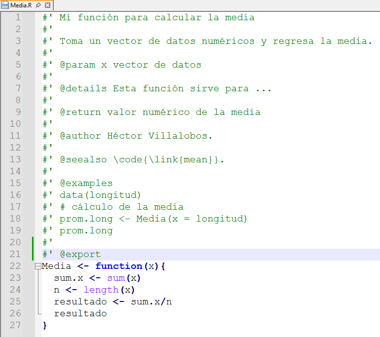
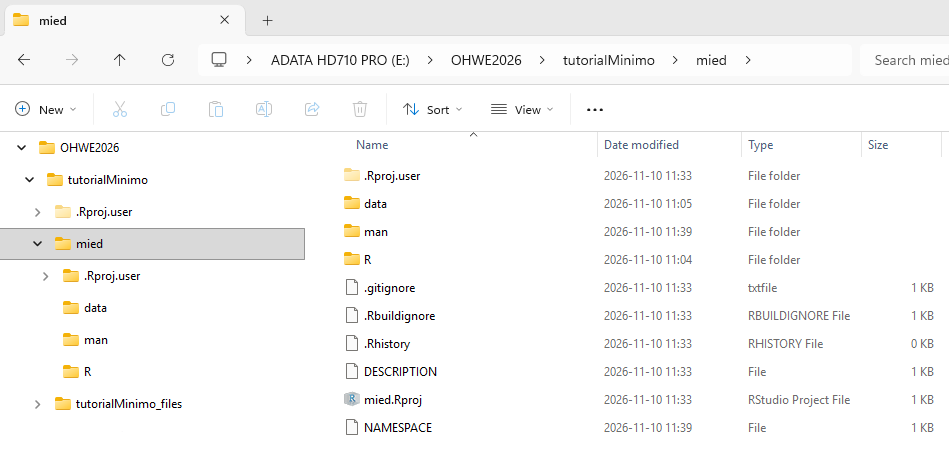
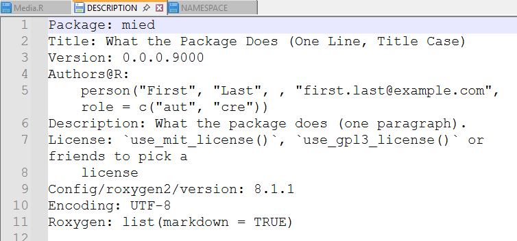
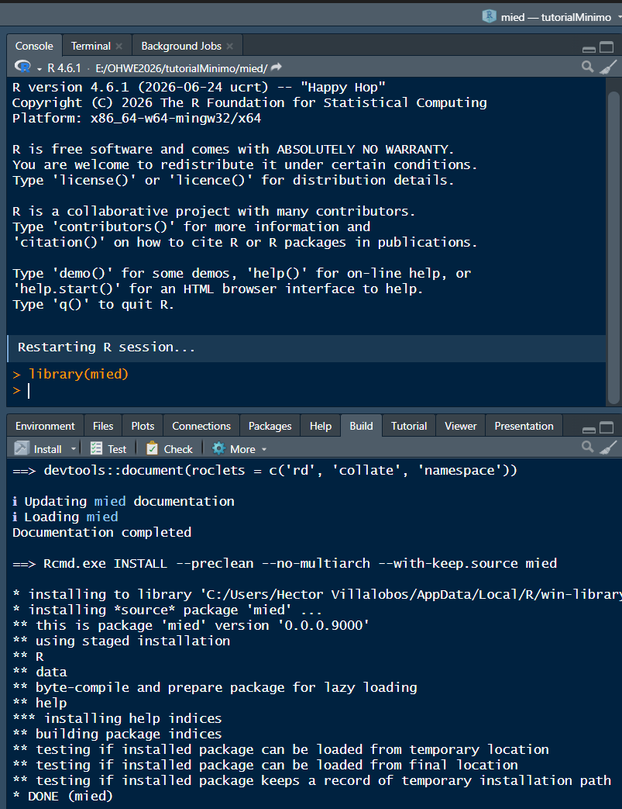

set.seed(7)
longitud <- round(rnorm(20, mean = 150, sd = 30), digits = 0)
longitud [1] 219 114 129 138 121 122 172 146 155 216 161 232 218 160 207 164 123 141 150
[20] 180Funciones y Paquetes
La reutilización de código nos permite ahorrar tiempo cuando necesitamos ejecutar una serie de pasos secuenciales para realizar un determinado análisis, especialmente cuando tenemos que repetirlo para varios conjuntos de datos.
En este escenario, nuestro primer reflejo es copiar el código que tenemos, pegarlo más abajo en nuestro script y reemplazar el nombre del objeto utilizado con el que contiene los nuevos datos. El inconveniente de este enfoque es que vamos a acabar con un script con demasiadas líneas, lo que lo hace difícil de revisar y mantener, aunado a que si olvidamos reemplazar algo en una parte del código se pueden producir errores difíciles de detectar. Entre más larga y compleja sea la tarea, los errores se pueden multiplicar.
Una mejor solución es convertir nuestro código en una función, la cual podemos aplicar a cualquier otro conjunto de datos, simplificando nuestro código de cientos de líneas a unas cuantas.
Para ejemplificar esto, vamos a simular una serie de 20 longitudes de cierta especie de pez con media = 150 mm y desviación estándar de 30 = mm.
set.seed(7)
longitud <- round(rnorm(20, mean = 150, sd = 30), digits = 0)
longitud [1] 219 114 129 138 121 122 172 146 155 216 161 232 218 160 207 164 123 141 150
[20] 180Supongamos por un momento que en R no existe una función para promediar estas longitudes. Sabemos que la media \(\bar{x}\) resulta de:
\[ \bar{x} = \frac{\displaystyle \sum_{i=1}^n x_i}{n}. \]
donde \(x_i\) ( \(i=1, 2, \ldots n\). ) es un vector de datos numéricos y \(n\) es el número de valores. Este cálculo es por supuesto muy simple, solamente necesitamos sumar todos los valores \(x_1 + x_2 + \ldots + x_n\) y dividir entre \(n\).
Este cálculo paso a paso sería:
Sum.xi <- sum(longitud) # suma de x_i
n <- length(longitud) # número de datos
promedio <- Sum.xi/n # cociente
promedio # resultado[1] 163.4Ahora, si también tuviésemos los pesos de los mismos peces y también nos interesa el peso promedio, podríamos hacer:
set.seed(7)
peso <- round(rnorm(20, mean = 53, sd = 15), digits = 1)
# Peso promedio
Sum.xi <- sum(peso) # suma de x_i
n <- length(peso) # número de datos
promedio <- Sum.xi/n # cociente
promedio # resultado[1] 59.64Los pasos son idénticos, solo bastó reemplazar longitud por peso en las dos instrucciones en las que aparece y listo. El inconveniente es que hemos sobrescrito los resultados obtenidos para las longitudes.
La idea ahora es crear una función que llamaremos Media(), la cual aplicaremos a otros conjuntos de datos y de esa manera simplificaremos el script.
# Función para calcular la media
Media <- function(x){
Sum.xi <- sum(x)
n <- length(x)
resultado <- Sum.xi/n
return(resultado)
}Una vez que ejecutamos este código, la función estará disponible en la sesión de R mientras no la cerremos.
Media(x = longitud)[1] 163.4Media(peso)[1] 59.64# incluso podemos pasar los valores directamente, sin crear antes un vector
Media(c(5, 10, 7, 9))[1] 7.75La función anterior persiste en el ambiente de R mientras la sesión esté abierta. Para reutilizarla en otra sesión o compartirla con nuestros colegas, podemos guardarla como un archivo independiente Media.R y cargarla con source().
dump("Media", file = "Media.R")Para probar nuestra función, primero borramos todo el ambiente para que no interfiera con lo nuevo
rm(list = ls())luego cargamos la función con source()
source("Media.R")finalmente, probamos
set.seed(21)
peso <- round(rnorm(500, mean = 65, sd = 16), digits = 1)
Media(peso)[1] 66.1084El pasar de una función a un paquete requiere varios elementos. Primero, debemos documentar nuestra función para que los demás sepamos lo que hace (¡incluido nuestro yo del futuro!). Esto normalmente implica generar uno o varios ejemplos de uso, por lo que probablemente también necesitemos agregar datos.
Para la documentación, existen diferentes opciones, una muy conveniente es incluirla en el mismo archivo de la función y procesarla con ayuda del paquete roxygen2. Este utiliza comentarios especiales que empiezan con #' e incluyen marcas (tags), precedidas por el símbolo @, que identifican cada parte de la ayuda, por ejemplo @author; @examples, etc. Esto lo podemos hacer en cualquier editor de textos o bien dentro de RStudio. Guardamos nuestra función modificada en la carpeta R de otro directorio, digamos mied, que será el nombre del paquete.

Como puede verse, se incluyó un ejemplo de uso, y para que este funcione, el vector longitud se debe incluir en el paquete en la carpeta data de mied.
set.seed(56)
longitud <- round(rnorm(20, mean = 150, sd = 30), digits = 0)
save(longitud, file = "./mied/data/longitud.rda", version = 3)Otros archivos necesarios son DESCRIPTION y NAMESPACE que incluyen información general del paquete, como autor(es), tipo de licencia, etc, y las funciones de otros paquetes que se requieren.
Con la función create_package() del paquete usethis se pueden generar plantillas de estos documentos, pero para ello será necesario cambiarnos a la carpeta mied. NOTA: esta función crea algunos archivos y directorios ocultos, además de un “proyecto” de RStudio y lo abre en una nueva sesión, por lo que el siguiente bloque de código no se debe ejecutar dentro de este tutorial, sino copiarlo en un script aparte y ejecutarlo ahí.
# *************** EJECUTAR EN SCRIPT APARTE, NO EN ESTE TUTORIAL***************
setwd("E:/OHWE2026/tutorialMinimo/mied")
library(usethis)
usethis::create_package("D:/OHWE2026/tutorialMinimo/mied")
use_gpl3_license() # incluir licencia GPL3Lo que sigue es procesar la ayuda de la función, que básicamente implica extraer los comentarios y generar un archivo Media.Rd que después se procesan en R para generar la ayuda en formato html. El archivo anterior se guarda automáticamente en la carpeta man de mied.
library(roxygen2)
roxygenise("mied")La estructura del paquete entonces quedaría así:

Por último editamos los archivos DESCRIPTION y NAMESPACE (de ser necesario) con RStudio u otro editor de textos.

Cuando esto se ha completado, podemos probar la instalación de nuestro paquete. Lo más sencillo es
mied.Rproj.
Si todo trascurre sin errores, se carga el paquete como cualquier otro y listo:
library(mied)
data("longitud")
Media(longitud)[1] 148.2invocar ayuda
?Mediastarting httpd help server ... doneCuando consideramos que nuestro paquete puede ser útil para otras personas, es conveniente correr pruebas de que la documentación está completa y que los ejemplos son funcionales. Eso es particularmente importante si queremos someterlo para su publicación en el repositorio de R (CRAN, The Comprehensive R Archive Network):
Build >>> Check
Después de que las pruebas sean exitosas, generamos el archivo fuente (mied_0.0.0.9000.tar.gz), que es el que se envía a CRAN:
Build >>> More >>> Build Source Package
o el binario para la plataforma en la que estamos trabajando (mied_0.0.0.9000.zip)
Build >>> More >>> Build Binary Package
Este último se puede compartir con otros usuarios.
Por último, todo la carpeta de nuestro paquete puede ser subida a nuestro repositorio github.